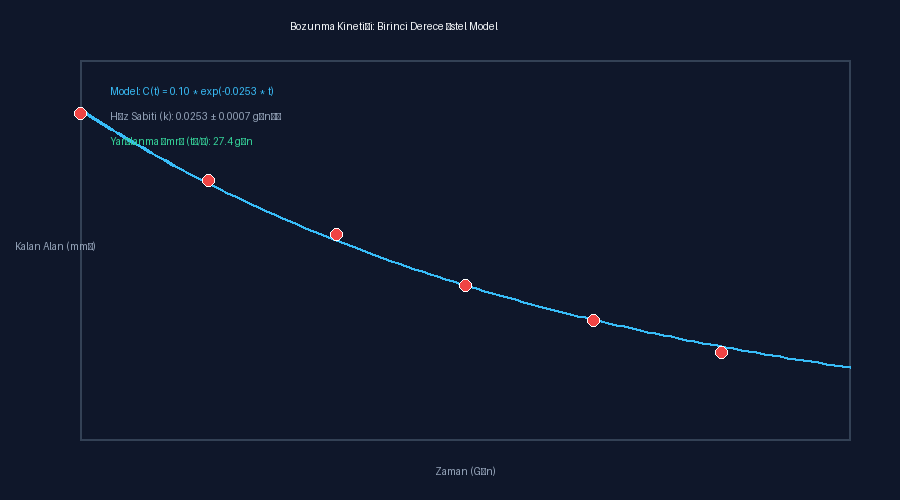

Gerçek mikroskop zaman serisi görüntüleri üzerinden fiziksel alan dönüşümü (mm²) yapılmış, birinci derece üstel kinetik model uydurulmuş ve analiz kaydı kriptografik SHA-256 ile mühürlenmiştir.

analysis_record.json dosyası, girdi veri noktaları ve uydurma parametrelerini değişmez biçimde saklar. Tek bir değerin değiştirilmesi durumunda bütünlük kontrolü başarısız olur.